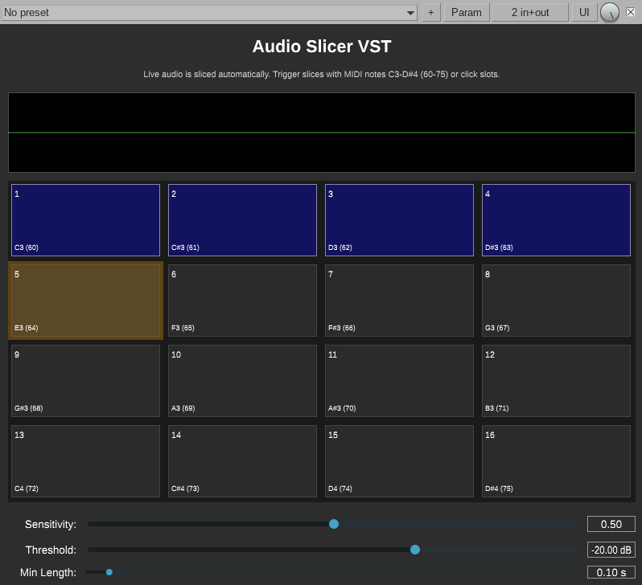

Slice live audio in real time. Capture transients into 16 playable slots. Retrigger with MIDI or click. Destroy your signal the right way.

Energy-based RMS analysis catches transients in your incoming audio stream as they happen, no pre-recording needed.
Slices fill slots 1–16 sequentially and wrap around. Each slot shows a waveform preview with color-coded status.
Trigger any slice via MIDI notes C3–D#4 (60–75). Polyphonic — stack as many slices as you want simultaneously.
No MIDI setup? Click any slot directly in the UI to fire it. Works standalone in any VST3 host.
Dial in Sensitivity, Threshold, and Min Length to filter out false triggers and capture exactly what you want.
Built with JUCE. Source on GitHub. No license, no activation, no nonsense — just the plugin.
| Parameter | Range | Description |
|---|---|---|
| Sensitivity | 0.0 – 1.0 | Controls the RMS ratio threshold for transient detection. Higher values require bigger energy jumps to trigger a new slice. |
| Threshold | -60 dB – 0 dB | Minimum signal level required to detect a transient. Raise to ignore quiet background noise. |
| Min Length | 0.01 s – 10.0 s | Minimum duration between slice captures. Acts as a cooldown to prevent rapid-fire false detections. |
Gear reviews, live PA setups, synth deep-dives, MIDI controllers, slicer plugins, drum machines, and the occasional rabbit hole. A poke in the ear with a sharp stick.
Browse all posts →AudioDestrukt is a one-person audio software shop. The goal is to make weird, useful, and occasionally destructive audio tools for producers, performers, and sound designers who prefer their signal chain a little rough around the edges.
"A poke in the ear with a sharp stick."
More plugins coming. Follow the blog or watch the GitHub for updates.